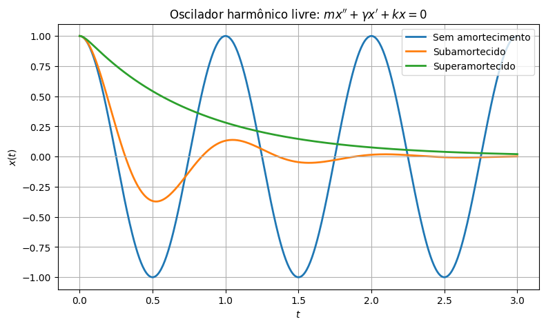
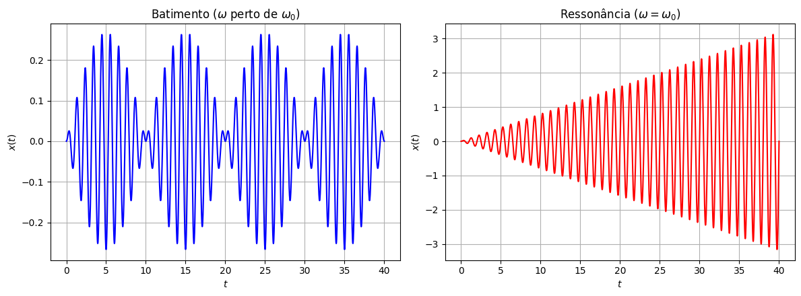

Modelagem com EDOs de 2ª Ordem#
Equações de segunda ordem aparecem naturalmente sempre que a segunda lei de Newton entra em jogo: força é proporcional à aceleração, ou seja, à segunda derivada da posição. E não são só sistemas mecânicos: circuitos elétricos com indutores também produzem uma segunda derivada, dessa vez da carga elétrica.
Nesta aula, vamos ver três sistemas físicos completamente diferentes: um sistema massa-mola, um pêndulo e um circuito elétrico. Os três, surpreendentemente, recaem exatamente na mesma equação diferencial:
Essa vai ser a equação mais importante do resto do curso. Vamos entender de onde vem cada termo em cada um dos três sistemas e, no final, fazer algumas simulações numéricas, sem resolver a equação analiticamente ainda, só para ter uma ideia visual dos tipos de comportamento que ela pode produzir.
1. Sistema massa-mola: o nosso protótipo#
Considere um bloco de massa \(m\), preso a uma mola, que pode deslizar sobre uma superfície (com atrito, ou imerso num fluido viscoso, como um amortecedor). Seja \(x(t)\) o deslocamento do bloco em relação à posição de equilíbrio da mola. Três forças atuam sobre o bloco:
A força da mola (Lei de Hooke): proporcional ao deslocamento, e sempre puxando de volta para o equilíbrio: \(F_{\text{mola}} = -kx\), onde \(k>0\) é a rigidez da mola.
A força de amortecimento: um amortecedor (ou o atrito/resistência do meio) se opõe ao movimento, com força proporcional à velocidade: \(F_{\text{amort}} = -\gamma x'\), onde \(\gamma\geq0\) é o coeficiente de amortecimento.
Uma força externa \(F(t)\), aplicada de fora (alguém empurrando o bloco periodicamente, por exemplo).
Sistema massa-mola-amortecedor: \(m\) é a massa, \(k\) é a rigidez da mola, \(\gamma\) é o amortecimento.
Pela segunda lei de Newton, a força resultante (soma das três forças) é igual a massa vezes aceleração: \(mx'' = \sum F\):
Vamos chamar essa equação de oscilador harmônico, e ela vai ser o nosso modelo-protótipo para todo o resto do capítulo: \(m\) é a inércia (quanto mais massa, mais devagar o sistema reage), \(\gamma\) é o amortecimento (dissipa energia), \(k\) é a rigidez (a força restauradora) e \(F(t)\) é a força externa.
2. O pêndulo (linearizado)#
Já vimos, lá na aula de classificação, a equação do pêndulo simples: \(\theta'' + (g/L)\,\text{sen}\,\theta = 0\). Vamos generalizar um pouco, incluindo amortecimento (atrito no eixo, resistência do ar) e uma força externa (um torque aplicado).
A ideia é a mesma da segunda lei de Newton, só que na versão rotacional: momento de inércia vezes aceleração angular é igual à soma dos torques, \(I\theta'' = \sum \tau\). Para um pêndulo simples (massa \(m\) na ponta de uma haste de comprimento \(L\)), o momento de inércia é \(I=mL^2\), e os torques são:
Torque da gravidade: \(-mgL\,\text{sen}\,\theta\) (a componente do peso perpendicular à haste).
Torque de amortecimento: \(-c\,\theta'\), proporcional à velocidade angular.
Torque externo: \(\tau(t)\).
Pêndulo simples de comprimento \(L\) e massa \(m\).
Então:
Já conhecemos, da aula de classificação, o truque para lidar com o \(\text{sen}\,\theta\): para ângulos pequenos, \(\text{sen}\,\theta\approx\theta\). Linearizando:
Mesma estrutura de antes: inércia (agora rotacional), amortecimento, «rigidez» (a gravidade fazendo o papel da mola) e forçamento externo.
3. Circuito RLC em série#
Já mencionamos essa equação de relance lá na aula «Por que Equações Diferenciais». Considere um circuito com um resistor (\(R\)), um indutor (\(L\)) e um capacitor (\(C\)) ligados em série a uma fonte de tensão \(E(t)\). A Lei de Kirchhoff das tensões diz que a soma das quedas de tensão ao longo do circuito é igual à tensão da fonte. Usando a carga \(q(t)\) no capacitor (com corrente \(I=q'\)):
Queda de tensão no indutor: \(L\,I' = L\,q''\) (o indutor se opõe a mudanças na corrente — é a «inércia elétrica»).
Queda de tensão no resistor: \(R\,I = R\,q'\) (dissipa energia — é o «amortecimento elétrico»).
Queda de tensão no capacitor: \(q/C\) (a «rigidez elétrica»: quanto mais carga acumulada, mais ele «empurra de volta»).
Circuito RLC em série, com fonte de tensão \(E(t)\).
Somando tudo e igualando à fonte:
De novo, exatamente a mesma estrutura: \(L\) faz o papel de inércia, \(R\) de amortecimento, \(1/C\) de rigidez, e \(E(t)\) de forçamento externo.
A mesma equação, três modelos#
Essa é mais uma daquelas ideias bonitas que atravessam o curso inteiro: sistemas físicos completamente diferentes, descritos exatamente pela mesma matemática. Todos estes exemplos são equivalentes à EDO
Massa-mola |
Pêndulo (linearizado) |
Circuito RLC |
|
|---|---|---|---|
Variável (\(y\)) |
posição \(x\) |
ângulo \(\theta\) |
carga \(q\) |
Inércia (\(a\)) |
massa \(m\) |
momento de inércia \(mL^2\) |
indutância \(L\) |
Amortecimento (\(b\)) |
coef. de amortecimento \(\gamma\) |
atrito rotacional \(c\) |
resistência \(R\) |
Rigidez (\(c\)) |
rigidez da mola \(k\) |
\(mgL\) |
\(1/C\) (capacitância) |
Forçamento (\(F(t)\)) |
força externa \(F(t)\) |
torque externo \(\tau(t)\) |
tensão da fonte \(E(t)\) |
Resolver essa equação uma vez resolve, ao mesmo tempo, o movimento de um carro com suspensão, as oscilações de um pêndulo de relógio, e a corrente num circuito de rádio.
Simulando o oscilador harmônico (sem resolver ainda)#
Ainda não vamos resolver essa equação analiticamente — isso é assunto das próximas aulas. Por enquanto, vamos usar o computador para simular numericamente alguns comportamentos típicos, só para ter uma ideia visual do que está por vir. Vamos usar a notação do sistema massa-mola (\(x\), \(m\), \(\gamma\), \(k\)), mas lembre-se: é a mesma equação para os três sistemas.
import numpy as np
import matplotlib.pyplot as plt
from scipy.integrate import odeint
def oscilador(estado, t, m, gamma, k, F):
x, v = estado
dx = v
dv = (F(t) - gamma*v - k*x)/m
return [dx, dv]
m_, k_ = 1.0, (2*np.pi)**2
gamma_crit = 2*np.sqrt(k_*m_) # o "amortecimento crítico" -- vamos entender essa fórmula em breve
casos = [
("Sem amortecimento", 0.0),
("Subamortecido", 0.3*gamma_crit),
("Superamortecido", 2.5*gamma_crit),
]
t = np.linspace(0, 3, 500)
plt.figure(figsize=(9, 5))
for label, gamma_ in casos:
sol = odeint(oscilador, [1, 0], t, args=(m_, gamma_, k_, lambda t: 0.0))
plt.plot(t, sol[:, 0], linewidth=2, label=label)
plt.axhline(0, color='0.7', linewidth=0.8)
plt.title(r"Oscilador harmônico livre: $mx''+\gamma x'+kx=0$")
plt.xlabel("$t$"); plt.ylabel("$x(t)$")
plt.legend()
plt.grid(True)
plt.show()

Repare nos três comportamentos bem diferentes, todos partindo do mesmo estado inicial (\(x(0)=1\), parado):
Sem amortecimento: oscila para sempre, com amplitude constante — nenhuma energia é dissipada.
Subamortecido: oscila, mas a amplitude vai diminuindo até sumir — o sistema «balança» algumas vezes antes de estabilizar.
Superamortecido: volta para o equilíbrio suavemente, sem nenhuma oscilação — o amortecimento é forte demais para permitir qualquer «balanço».
Já demos uma espiada nesse tipo de comparação lá na aula «Por que Equações Diferenciais» (para o caso massa-mola-amortecedor/RLC); agora incluímos também o caso sem amortecimento nenhum. Nas próximas aulas vamos entender exatamente de onde vêm esses três regimes — inclusive a fórmula do tal «amortecimento crítico» que apareceu escondida no código.
w0 = np.sqrt(k_/m_)
F0 = 1.0
w_bat = 0.9*w0
t_bat = np.linspace(0, 40, 2000)
sol_bat = odeint(oscilador, [0, 0], t_bat, args=(m_, 0.0, k_, lambda t: F0*np.cos(w_bat*t)))
t_res = np.linspace(0, 40, 2000)
sol_res = odeint(oscilador, [0, 0], t_res, args=(m_, 0.0, k_, lambda t: F0*np.cos(w0*t)))
fig, axs = plt.subplots(1, 2, figsize=(12, 4.5))
axs[0].plot(t_bat, sol_bat[:, 0], 'b')
axs[0].set_title(r"Batimento ($\omega$ perto de $\omega_0$)")
axs[0].set_xlabel("$t$"); axs[0].set_ylabel("$x(t)$")
axs[0].grid(True)
axs[1].plot(t_res, sol_res[:, 0], 'r')
axs[1].set_title(r"Ressonância ($\omega = \omega_0$)")
axs[1].set_xlabel("$t$"); axs[1].set_ylabel("$x(t)$")
axs[1].grid(True)
plt.tight_layout()
plt.show()

Agora, sem amortecimento, mas com uma força externa oscilante \(F(t)=F_0\cos(\omega t)\):
Batimento (esquerda): quando a frequência de forçamento \(\omega\) está perto, mas não é igual, à frequência natural \(\omega_0\) do sistema, a amplitude oscila lentamente entre quase zero e um valor máximo — o famoso fenômeno de batimento (o mesmo que você ouve quando dois instrumentos musicais estão quase, mas não perfeitamente, afinados).
Ressonância (direita): quando \(\omega=\omega_0\) exatamente, a amplitude cresce sem parar — não há mais um «teto». Foi exatamente esse fenômeno, lá na aula «Por que Equações Diferenciais», que ajudou a derrubar a ponte de Tacoma Narrows.
Vamos voltar a esse assunto de vibrações com todo o cuidado — incluindo como calcular exatamente a frequência natural, o amortecimento crítico, e as amplitudes de batimento e ressonância — nas próximas aulas.
O que vem a seguir#
Agora que sabemos de onde vem a equação \(ay''+by'+cy=F(t)\), e já demos uma espiada visual nos comportamentos possíveis, é hora de aprender a resolvê-la de verdade. Vamos começar pelo caso mais simples — sem forçamento externo (\(F(t)=0\)), a chamada equação homogênea — usando a mesma ideia de «adivinhar e verificar» que já funcionou tão bem para a equação de primeira ordem \(y'=ky\).